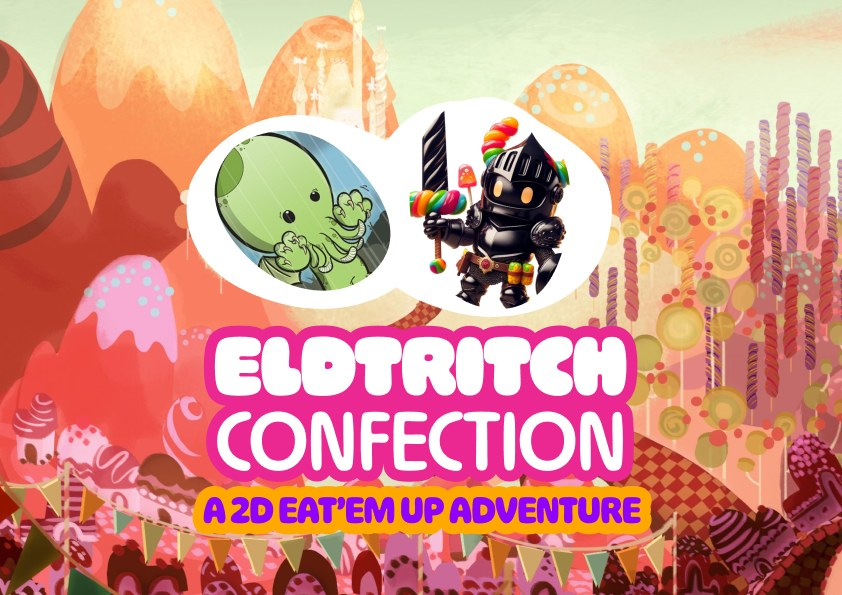
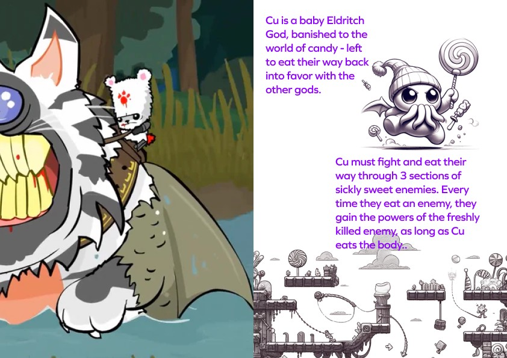
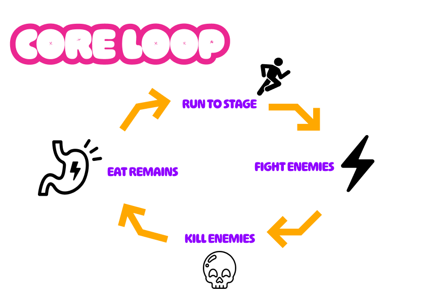
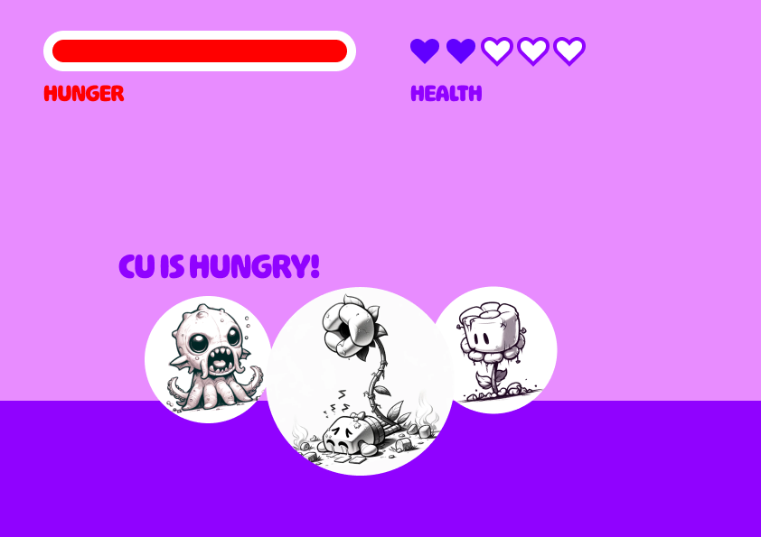
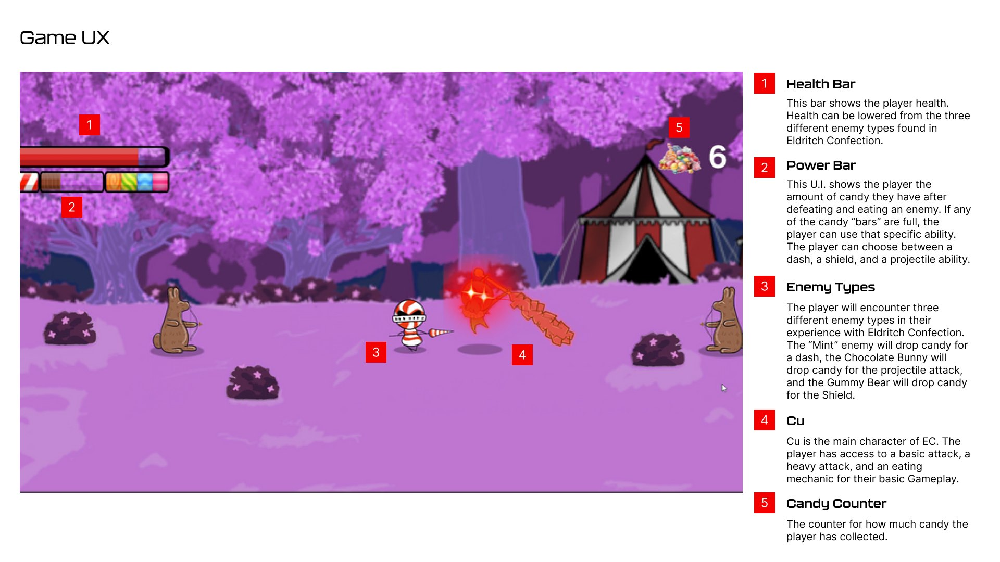
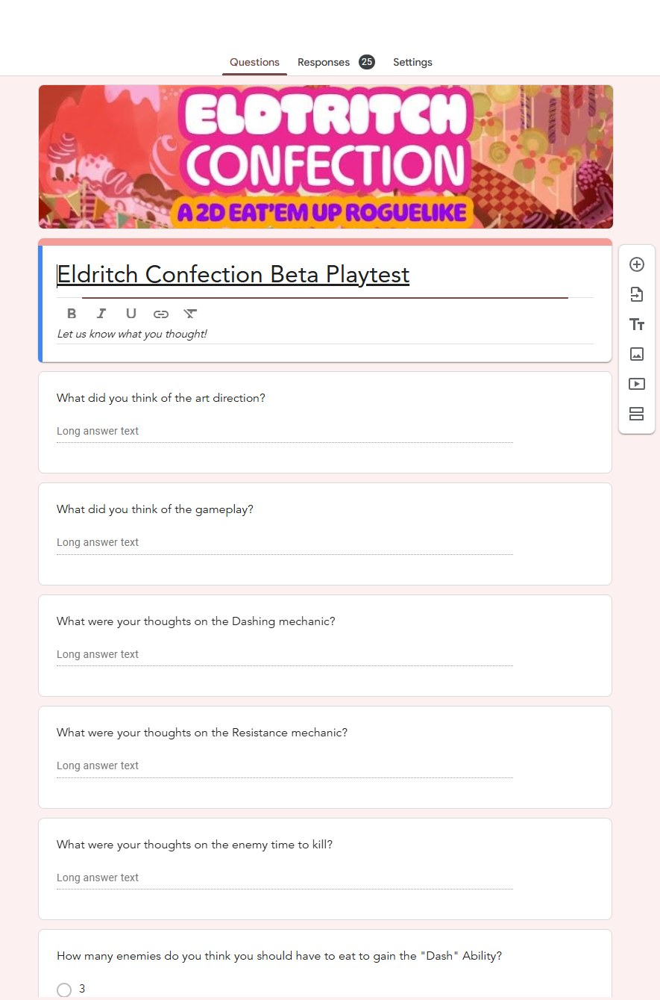

A full game built in a month by a five-person team and shipped on itch.io. I designed the core combat and the basic UI, then let weekly playtests tell me where I was wrong.

Eldritch Confection is a 2D "eat-'em-up" where cute meets cosmic horror. You play Cu, a baby Eldritch god banished to the world of candy and left to eat their way back into the other gods' favor.
The hook is the eating. Cu fights through three sections of sickly-sweet enemies, and every time they devour a body they take on that enemy's power — so beating an enemy is only half of it, you have to eat it too. We built it as Team Teeth Thieves.

I designed how it feels to fight — then let weekly playtests tell me where I was wrong.
I owned the core combat experience and the basic UI, and I ran the user-research side — pulling feedback out of weekly playtests and turning it into the next round of changes.
On a timeline this short, that research loop was the design process. There was no time to fall in love with a first idea, so I didn't.
A four-week build leaves no room to guess. The combat had to feel satisfying almost immediately, the UI had to be legible with zero onboarding, and the only honest way to know if either worked was to put the game in front of players every week and actually listen.
My job was to make that feedback loop fast enough to matter inside the schedule we had.
I set the core combat and the loop that carries it: run to the stage, fight, kill, then — the part that makes it Eldritch — eat what's left. Cu has a basic attack, a heavy attack, and the eating mechanic, and devouring an enemy hands you its power for the next fight.

Before the final HUD, I mocked up the basics — hunger and health up top, the ability framing, the "Cu is hungry" beat — to settle the layout and priorities early, while they were still cheap to change.

Then I mapped the on-screen UX so the eat-and-power system reads instantly: a health bar, a power bar that fills from the candy each enemy drops, and a candy counter. Mint enemies feed the dash, chocolate bunnies the projectile, gummy bears the shield — the UI makes that legible in the middle of a fight.

Every week we put the game in front of players, and I owned the research side — writing the surveys, running the sessions, and turning what came back into the next round of changes.
The questions were pointed on purpose. This beta form asked players to react to the art direction and the overall gameplay, then drilled into specifics: how the dashing mechanic felt, whether the candy-power mechanic read clearly, and whether enemies took the right amount of time to kill. It even handed balance calls straight to players — like how many enemies you should have to eat before you earn the dash.
The open-ended answers did the heavy lifting. Twenty-five responses is enough to see a pattern, and my job was to find it — telling one loud opinion apart from a real trend, then translating "the dash feels bad" into something we could actually change and re-test: its range, its cost, the timing.
That weekly rhythm kept us honest. Instead of polishing whatever we happened to like, we shipped the changes players kept asking for — which is what moved the combat from "fine" to "fun."

A month-long build doesn't reward your best guess — it rewards how fast you turn player feedback into changes.
Eldritch Confection shipped on itch.io as a complete game — built by five people in about a month, with combat that got there because we tested it every week and actually changed things based on what we saw.
The takeaway I kept: on a tight timeline, a real research loop beats a bigger plan. Listening weekly is what kept us polishing the right things instead of the wrong ones.